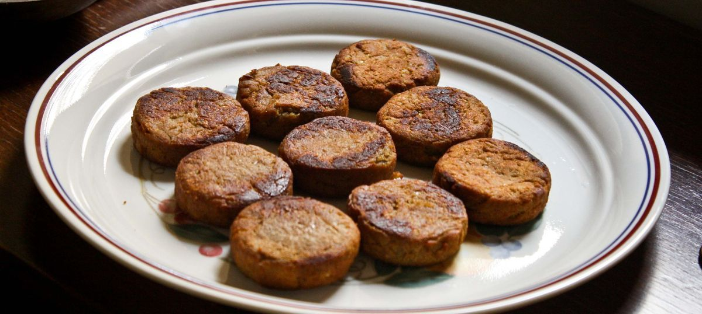

Browse Submissions
A Literary History of Western Uttar Pradesh
Last edited: 30 minutes ago

Vegetarianism in Kayastha Traditions
Last edited: 1 hour ago
Folk Songs of Pre-Persian Khariboli
Last edited: 2.5 hours ago
Partition Tales and the Paranormal
Last edited: 1 day ago